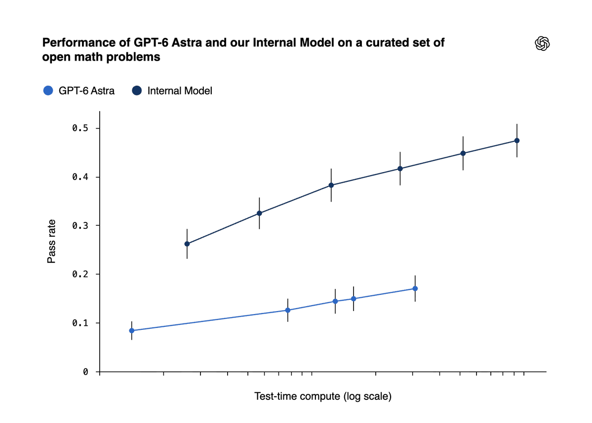

Should we try to coordinate?
If the coordination required to stop AGI is too hard, that does not answer whether we should try.
Seth Lazar
Professor, JHU SGP
Why does this question matter? How can we answer it?
01 — Why it matters
01 - WHy it Matters
This is implausibly fatalistic.
AGI is a very physical technology. In an age of long-range precision weaponry, it is not beyond collective choice.
01 – WHy it Matters
If the coordination required to stop AGI is too hard, that does not answer whether we should try.
If malicious actors would defeat coordination, that does not answer whether we should oppose them.
What attitudes we take to AGI’s inevitability also have downstream implications for other actions.
01 – WHy it Matters
Gallup · May 2026
71%
of U.S. adults oppose an AI data centre in their area
48% strongly oppose
Reuters · July 2026
142 protests
across 42 states in a single nationwide action
“We thrive on water not data”
Data Center Watch
75 projects
blocked or delayed by local opposition in Q1 2026
approximately $130bn affected
This ≠ opposition to AGI. But they’re pretty close. And it’s pretty likely that, if you try to convince people to let data centres be built (near them), you’ll need an argument as to why we’re building a future worth having.
01 — Why it matters

“automated AI R&D could lead to a very rapid acceleration in AI capabilities very soon.”
Paul Christiano · 9 September 2026
RSI may be here soon.
This may be the turning point.
01 – Why it Matters
Who are we to decide?
What should you think?
These aren't our questions.
The aim is to equip you to participate in, and help improve, democratic debate.
Political philosophy can sharpen your diagnostics, clarify your aims, and identify the standard of justification that your broader political commitments entail.
01 – WHy it Matters
02 — Classifying harms
The values at stake.
02 — Classifying harms
What kinds of reasons are in play?
03 — Freedom & justification
What can justify the state in stopping some building AGI?
What can justify those building AGI imposing its risks on others?
03 — Freedom & justification
What is the state being asked to do?
Should the state itself actively build AGI?
Should the state fund, endorse, and facilitate individuals and private organisations building AGI?
Should the state permit individuals and private organisations to pursue AGI?
03 — Freedom & justification
AGI and freedom
Can AGI be guaranteed safe, or otherwise not to have those negative effects?
03 — Freedom & justification
A separate decision
Yes to human-level; no to superhuman
Human-level AGI may be built if specified conditions are met, but superhuman AGI should not be built. Is this a feasible outcome?
No to both
We cannot stop superhuman AGI once human-level AGI exists, and we cannot build human-level AGI sufficiently safely.
Yes to both, if safe
Benefits outweigh risks if human-level and superhuman AGI can be built safely.
AGI / ASI · Inevitability / agency · Uncertainty
How do the reasons net out?
Promise must be subject to same level of rigour as peril.
| Reason | Against building AGI | For building AGI |
|---|---|---|
| Existential | ||
| Catastrophic | ||
| Public | ||
| Private |
![Jason Wolfe: I don't know what my probabilities are on literal extinction, but I think there are a number of ways AI could go poorly for humanity, and at the current frankly terrifying pace humanity will be quite lucky if we manage to find and stay on the narrow path between all the bad outcomes. I am heartened by the many costly actions OpenAI has taken recently (detailed in several recent posts), but regardless of what you think of OpenAI, this is not a problem that can be solved by any one company (or country) in isolation. We need coordination to be able to approach future capability increases with an appropriate degree of caution and humility, and we need it yesterday.](assets/jason-wolfe.png)